14 DNA Language Models
Prerequisites: Before reading this chapter, you should be familiar with:
- Sequence representations and tokenization strategies (Chapter 5)
- Convolutional neural networks for genomics (Chapter 6)
- Attention mechanisms and transformers (Chapter 7)
- Pretraining objectives (masked language modeling, autoregressive) (Chapter 8)
Learning Objectives: After completing this chapter, you will be able to:
- Explain why self-supervised learning on DNA sequences can discover regulatory grammar
- Compare the architectural innovations of major DNA language models (DNABERT, Nucleotide Transformer, HyenaDNA, Caduceus, Evo 2)
- Evaluate the tradeoffs between context length, computational complexity, and biological inductive biases
- Apply DNA language models for embedding extraction, fine-tuning, and zero-shot variant scoring
- Identify the fundamental limitations of sequence-only models
Key Insight: DNA language models learn representations, not predictions. They capture what patterns exist in genomic sequence but not what those patterns do in cellular context. Understanding this distinction is essential for knowing when and how to use these models.
A regulatory element in the genome looks like random sequence to the untrained eye: ACGTACGTACGT… indistinguishable from noise. Yet hidden within these letters is a grammar—rules governing which proteins bind where, how signals propagate across kilobases, why some mutations devastate while neighbors remain silent. For decades, researchers cataloged fragments of this grammar one experiment at a time: a binding site here, a splice signal there, each discovery hard-won and narrow in scope.
What if a model could discover this regulatory grammar automatically, simply by reading the genome?
The transformer revolution in natural language processing suggested this might be possible. Statistical patterns in unlabeled text contain information about grammar, semantics, and even world knowledge. Train a model to predict masked words from context, and it learns not just vocabulary but the structure of language itself. BERT, GPT, and their successors demonstrated that self-supervised learning on raw text yields representations useful for tasks the model was never explicitly trained to perform. Proteins proved amenable to the same approach: models trained to predict masked amino acids learned evolutionary constraints, structural properties, and functional relationships without explicit supervision (Chapter 15). DNA presents the analogous opportunity. If genomes encode a regulatory language, perhaps self-supervised learning on raw nucleotide sequence could discover its grammar.
DNA language models import this paradigm to nucleotide sequences. Rather than training separate models for each genomic prediction task, as the convolutional neural network (CNN) era required (Chapter 6), these approaches learn general-purpose representations from unlabeled genomes that transfer across applications. A single pretrained backbone can support regulatory element classification, variant effect prediction, cross-species analysis, and sequence generation through different downstream heads or adaptation strategies. After fine-tuning (Chapter 9), the same model that learns to predict masked nucleotides can predict chromatin accessibility in cell types it never saw during pretraining (Chapter 8). It can also identify splice sites without splice-specific training data and score variant effects using evolutionary patterns learned from billions of nucleotides.
The opportunity is substantial but not guaranteed to succeed. Protein sequences have clear functional units (domains, secondary structures, binding sites) that language model representations can capture. DNA sequences present a different challenge: regulatory grammar operates at multiple scales simultaneously, from six-nucleotide transcription factor binding sites through kilobase-scale enhancers to megabase chromatin domains. Whether self-supervised learning can discover this multi-scale grammar remains an empirical question.
14.1 From Task-Specific CNNs to General-Purpose Language Models
Before reading about the limitations of task-specific CNNs, consider: if you trained a model specifically to predict chromatin accessibility in one cell type, what challenges might you face when applying it to a new cell type or a different prediction task?
The convolutional neural networks examined in Chapter 6 achieved strong performance on specific genomic prediction tasks. They faced, however, the feature ceiling limitation discussed in Section 4.6.4: performance bounded by what architectural choices and training data could capture. DeepSEA predicted chromatin marks from sequence; SpliceAI identified splice junctions with clinical utility; ExPecto estimated expression effects of variants. Each model was engineered for its particular application, with architectural choices (filter sizes, dilation patterns, pooling strategies) optimized for the task at hand.
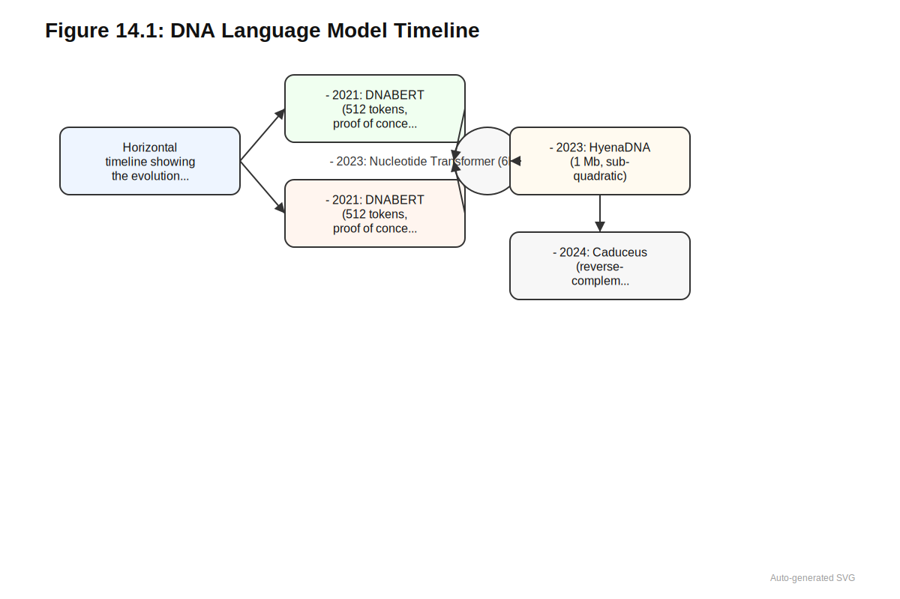
This paradigm succeeded but imposed three constraints that limited scalability. Every new assay, cell type, or phenotype required fresh labeled data; a model trained on ENCODE chromatin data could not predict histone modifications in a new cell type without additional labeled examples. Model architecture was bound to specific prediction problems: SpliceAI’s dilated convolutions were tailored for splice junction detection, and ExPecto’s spatial transformation was designed for the distance-dependent relationship between regulatory elements and transcription start sites. These architectural choices, while effective, did not transfer naturally to other problems. Features learned for one task could not easily support others; a model that learned to recognize transcription factor binding sites during chromatin accessibility training could not directly apply those representations to variant effect prediction without substantial re-engineering.
Protein language models demonstrated an alternative. ESM and related models trained on massive corpora of protein sequences using masked language modeling (predicting held-out amino acids from context) or autoregressive objectives (predicting the next amino acid). The resulting representations transferred to structure prediction, function annotation, and variant effect scoring without architecture changes (Chapter 15). DNA language models import this recipe: pretrain on large collections of genomic sequences using self-supervised objectives, then adapt the learned representations to downstream tasks through probing, fine-tuning, or zero-shot scoring.
For biology readers: Self-supervised learning creates training labels from the data itself, without manual annotation:
The insight: Instead of requiring expensive labeled data (e.g., “this variant is pathogenic”), self-supervised learning generates labels automatically from raw data.
Two main strategies for sequence models:
Masked Language Modeling (MLM): Hide some tokens, predict them from context.
- Input: “The CTCF motif [MASK] gene expression”
- Target: predict the masked word
- Genomic version: mask nucleotides, predict from surrounding sequence
Autoregressive (Next-Token Prediction): Predict each token from all previous tokens.
- Given: “ACGT”
- Predict: the next nucleotide
- Used by GPT-style models
Why it works:
- Creates unlimited training data from unlabeled sequences
- Forces model to learn statistical patterns that capture biological structure
- Positions with strong predictions = evolutionarily constrained positions
- Patterns useful for masked prediction transfer to other tasks
The key insight: Predicting masked nucleotides requires understanding what patterns are “allowed” in genomic sequence—which is exactly what determines variant effects.
The core shift from task-specific CNNs to DNA language models is this: instead of building specialized architectures for each task, train a single model to understand DNA sequence through self-supervision, then adapt that understanding to any downstream application. This inverts the traditional workflow from task-first (design architecture for task, train from scratch) to representation-first (learn general representations, adapt to tasks).
The practical workflow begins with training a language model on unlabeled genomic sequences to predict masked or subsequent nucleotides. From the trained model, embeddings are extracted for sequences of interest (windows around variants, regulatory elements, or entire genes). These embeddings then support downstream tasks through probing with lightweight classifiers, fine-tuning for specific applications, or zero-shot scoring via probability comparisons. Once a sufficiently powerful backbone exists, it becomes the default starting point for nearly any DNA-level prediction problem.
14.2 DNABERT: The First DNA Language Model
DNABERT applied the BERT masked language modeling framework to genomic sequences, establishing proof of concept for DNA self-supervision (Ji et al. 2021). The model used overlapping k-mers (typically 6-mers) as tokens, creating a vocabulary of 4,096 tokens from the \(4^6\) possible hexamers. This tokenization strategy, detailed in Section 5.2, provided computational efficiency at the cost of positional ambiguity for variants. Training on the human reference genome, DNABERT learned to predict masked tokens from surrounding context using the standard BERT architecture.
The design choices reflected computational constraints of the time. The \(k\)-mer tokenization provided some sequence compression compared to single-nucleotide representations, but the overlapping nature (each nucleotide participates in multiple adjacent k-mers) meant the compression was modest and created ambiguity about precise variant positions. Context windows were limited to 512 tokens, corresponding to a few hundred base pairs of genomic sequence. The standard transformer architecture with quadratic attention complexity made longer contexts computationally prohibitive, a limitation examined in Chapter 7 and resolved by the architectural innovations in Section 14.5.1 and Section 14.5.2.
Despite these limitations, DNABERT demonstrated several important principles. Fine-tuning on downstream tasks (promoter classification, splice site prediction, transcription factor binding site identification) achieved competitive performance with task-specific models trained from scratch. Learned embeddings captured biologically meaningful patterns, with similar sequences clustering together in embedding space even when trained only on the reference genome. The BERT-style architecture could be reused across multiple tasks with modest adaptation.
DNABERT-2 addressed the tokenization limitations through improved approaches including BPE-style token merging that better compressed repetitive sequences (Zhou et al. 2024). The resulting model could represent longer genomic contexts within the same number of tokens, improving computational efficiency. On standardized benchmarks spanning sequence classification, regulatory element prediction, and variant effect scoring (Chapter 11), DNABERT-2 achieved consistent gains over both the original DNABERT and non-pretrained baselines. These improvements validated the importance of thoughtful tokenization design for genomic applications (see Chapter 5 for detailed discussion of tokenization strategies).
The DNABERT family collectively established that self-supervision on DNA works, that tokenization choices substantially affect performance, and that masked language model training produces reusable representations for diverse sequence tasks. The foundation model paradigm transfers effectively from natural language to genomic sequence.
14.3 Nucleotide Transformer: Scaling Data and Model Diversity
DNABERT demonstrated feasibility but operated at modest scale relative to the size of genomes. The Nucleotide Transformer family pushed substantially further, emphasizing diversity in both training data and model architecture (Dalla-Torre et al. 2023).
The training corpus spanned genomic data from multiple species and human populations, exposing models to diverse sequence patterns, different regulatory architectures, and evolutionary constraints recurring across lineages. This cross-species pretraining mirrors the use of large multi-species alignments in protein language models but operates directly on raw DNA without explicit alignment. Context length expanded to approximately 6 kb per input sequence, representing an order-of-magnitude increase over DNABERT while still using dense transformer attention. The training objective remained masked language modeling on subsequences sampled from genomes.
The Nucleotide Transformer project introduced a benchmark panel that has become a standard yardstick for evaluating DNA language models. Tasks include promoter and enhancer classification, histone mark and chromatin accessibility prediction, splice site identification, and regulatory element type classification. Models are evaluated through linear probes or light fine-tuning on standardized train/validation/test splits. This benchmark infrastructure enabled systematic comparison across models and established the evaluation protocols now used throughout the field (see Chapter 11 for comprehensive discussion of genomic benchmarks).
Scaling experiments revealed predictable relationships between model size, training data, and performance. Larger models with more pretraining data and longer context windows achieved better downstream performance, following patterns observed in natural language and protein modeling. These scaling trends suggest that continued investment in larger genomic language models will yield further improvements, though the optimal allocation between parameters, data, and compute remains an active research question (Chapter 13).
14.4 GPN: Cross-Species Pretraining for Variant Effect Prediction
While the Nucleotide Transformer demonstrated the value of scaling, the Genomic Pretrained Network (GPN) explored a complementary direction: what can be learned from cross-species pretraining on relatively small, well-annotated genomes (Benegas, Batra, and Song 2023). Rather than scaling to maximum size, GPN asked whether self-supervision could yield useful variant effect predictors even in constrained settings.
GPN was trained on unaligned reference genomes from Arabidopsis thaliana and seven related species within the Brassicales order using masked language modeling. Despite this modest training corpus, analysis revealed emergent encoding of gene structure (exon-intron boundaries, splice sites) and DNA sequence motifs (transcription factor binding patterns) without explicit supervision. The model discovered these patterns purely from statistical regularities of genomic sequence across related species.
GPN learns from only eight plant genomes, yet it outperforms conservation scores derived from alignments across dozens of species. What might explain this surprising result? Consider what information is preserved versus lost in multiple sequence alignment.
For variant effect prediction, GPN used a likelihood ratio approach. Given reference and alternate alleles at a position, the model computes the log-likelihood of each under the learned sequence distribution. Variants that substantially reduce sequence likelihood (relative to the reference) are inferred to be more disruptive. This scoring strategy exploits the fact that constrained positions should have confident predictions for the reference allele, while unconstrained positions allow more flexibility.
Consider scoring a variant at position 1000 in a gene. The workflow:
- Extract context window: Take the sequence from positions 500-1500 (1 kb centered on variant)
- Compute reference likelihood: Feed sequence with reference allele (e.g., A) to model; record log-probability \(\log P(\text{seq}|\text{A})\)
- Compute alternate likelihood: Feed sequence with alternate allele (e.g., G) to model; record log-probability \(\log P(\text{seq}|\text{G})\)
- Calculate likelihood ratio: \(\Delta = \log P(\text{seq}|\text{ref}) - \log P(\text{seq}|\text{alt})\)
- Interpret: Positive \(\Delta\) means alternate reduces sequence likelihood, suggesting disruption. Larger values indicate stronger constraint violation.
This approach requires no variant-specific training data and works for any position the model can process.
Evaluated on A. thaliana variants using allele frequencies from the 1001 Genomes Project, GPN outperformed traditional conservation scores including phyloP and phastCons (Benegas, Batra, and Song 2023). This was notable because phyloP and phastCons require explicit multiple sequence alignments and evolutionary models, while GPN learned its representations from unaligned sequences through self-supervision alone. The later GPN-MSA extended this approach to mammalian genomes by incorporating multi-species alignments, achieving strong performance on human variant benchmarks (?sec-ch14-dna-lm-vep). The success of this approach informed subsequent development of zero-shot variant scoring methods for clinical applications (?sec-ch26-fm-scoring).
GPN established several important principles. Cross-species pretraining captures evolutionary constraints transferable to variant effect prediction. Relatively small models trained on focused phylogenetic groups can outperform larger generic conservation measures within that group. The masked language modeling objective naturally produces representations suitable for variant scoring via likelihood comparisons.
14.5 Long-Context Revolution
This section discusses computational complexity notation (O notation) for comparing algorithms. If you are not familiar with this notation: \(O(L^2)\) means computational cost grows with the square of sequence length \(L\), while \(O(L)\) or \(O(L \log L)\) means cost grows linearly or near-linearly. The key takeaway is that quadratic scaling makes long sequences impractical, while linear scaling enables megabase processing.
Quadratic attention complexity limits transformer context to tens of kilobases at best. Processing a 100 kb sequence with dense attention requires on the order of \(10^{10}\) computations per layer. Yet regulatory phenomena routinely span larger distances: enhancer-promoter interactions extend 50-200 kb, topologically associating domains organize chromatin at the megabase scale, and some gene regulation involves even longer-range dependencies. The three-dimensional organization of chromatin that enables these long-range contacts is examined in Chapter 20; here we focus on how linear sequence models can capture information about these interactions. The mismatch between biological context and computational context represented a fundamental architectural limitation.
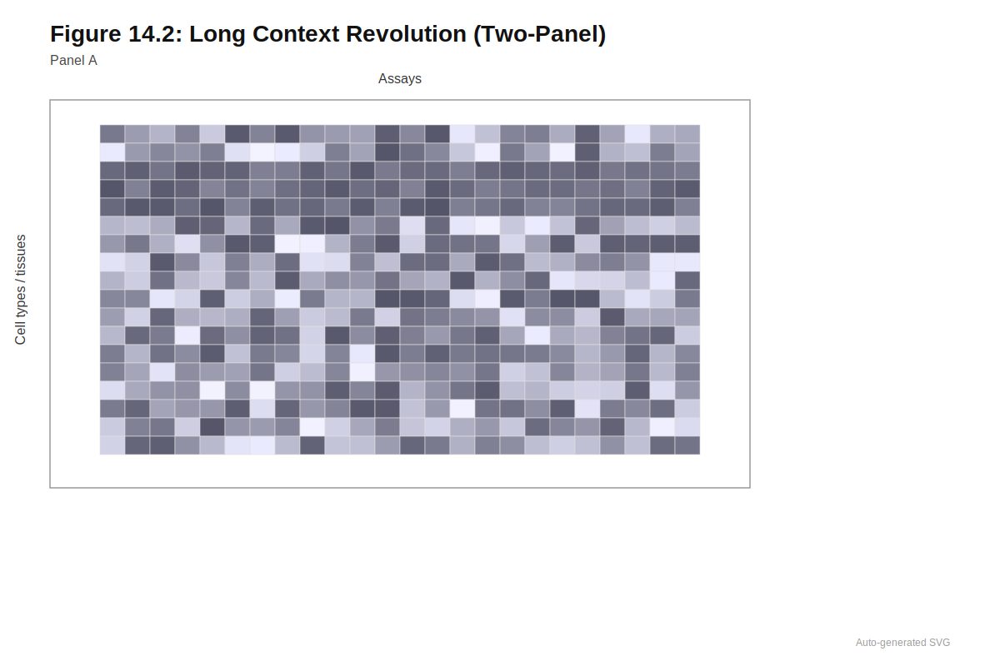
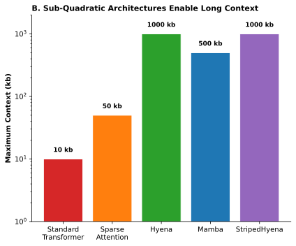
14.5.1 HyenaDNA: Megabase Context via Implicit Convolutions
HyenaDNA addressed this limitation by replacing attention with implicit convolutions that scale sub-quadratically (Nguyen et al. 2023). The Hyena architecture parameterizes long convolutional filters through neural networks rather than storing explicit filter weights, achieving \(O(L \log L)\) complexity through efficient FFT-based convolution compared to \(O(L^2)\) for standard attention. The result was a 500-fold increase in context length: HyenaDNA processes sequences up to 1 Mb while maintaining single-nucleotide resolution.
Processing megabase-scale windows allows the model to capture entire gene bodies plus flanking regulatory regions, long-range enhancer-promoter interactions, and topologically associating domain structure. Despite the long context, single-nucleotide tokens preserve maximum resolution for variant effect prediction. Each nucleotide is independently represented without the ambiguity introduced by \(k\)-mer tokenization.
On Nucleotide Transformer benchmarks, HyenaDNA achieved state-of-the-art results on the majority of tasks with orders of magnitude fewer parameters. On GenomicBenchmarks, it surpassed prior state-of-the-art on seven of eight datasets (Nguyen et al. 2023). HyenaDNA also demonstrated in-context learning in genomics: performance improved when examples were included in the input context without updating model weights. This capability, familiar from large language models, had not previously been observed for genomic sequences and suggests that sufficient context length combined with appropriate architecture enables qualitatively new forms of biological reasoning.
14.5.2 Caduceus: Bidirectional Processing with Reverse-Complement Equivariance
DNA is double-stranded, and any sequence can be read from either strand. The reverse complement of a sequence encodes the same information from the opposite strand’s perspective. For many biological processes, predictions should be identical or related consistently regardless of which strand is presented. Standard neural networks can produce divergent predictions for a sequence and its reverse complement, even with data augmentation during training.
Consider a model predicting transcription factor binding. A binding site on the forward strand (5’-GAATTC-3’) has reverse complement (5’-GAATTC-3’ on the reverse strand). Should a model’s prediction differ based on which strand you query? Why or why not? What about for genes, which have defined orientations?
Caduceus addressed this challenge by building reverse-complement equivariance directly into the architecture (Schiff et al. 2024). The model extends the Mamba state space architecture (which achieves O(L) complexity) to support both bidirectional processing and strand equivariance. The BiMamba component enables information flow in both directions along the sequence, while the MambaDNA block ensures mathematically related predictions for sequences and their reverse complements.
On downstream benchmarks, Caduceus outperformed previous long-range models. On challenging long-range variant effect prediction tasks, it exceeded models with ten times as many parameters that lacked bidirectionality or equivariance (Schiff et al. 2024). The key insight was that incorporating appropriate biological inductive biases can substitute for raw scale. Strand symmetry is a known property of DNA; building it into the architecture avoids wasting model capacity learning what could be specified directly.
Caduceus demonstrates a fundamental principle: when you know something about your domain, encode it in the architecture rather than hoping the model learns it from data. Strand symmetry is mathematically specifiable; building it in yields better performance with fewer parameters than training a larger model to approximate it. This principle applies broadly: whenever you have domain knowledge that can be expressed architecturally, doing so typically improves efficiency and generalization.
14.5.3 Evo 2: Genome-Scale Modeling Across the Tree of Life
The original Evo model demonstrated that DNA language models could operate at unprecedented scale (Nguyen et al. 2024). Trained on 2.7 million prokaryotic and phage genomes comprising 300 billion nucleotides, Evo processed sequences up to 131 kilobases using the StripedHyena architecture, a hybrid design combining state-space models with attention mechanisms. The 7 billion parameter model exhibited emergent biological understanding: predicting gene essentiality, identifying functional elements, and generating synthetic sequences with plausible biological properties. Evo demonstrated that training on raw DNA sequence alone, without annotation, could yield models that captured fundamental aspects of genome organization.
Evo 2 extends this foundation to the entire tree of life (Brixi et al. 2025). Where Evo focused primarily on prokaryotes and phages, Evo 2 incorporates eukaryotic genomes with their dramatically different organization: extensive noncoding regions, complex regulatory architectures, and intronic sequences that comprise the majority of gene length in many species. This expansion required both larger models and longer context windows to capture the sprawling regulatory landscapes characteristic of eukaryotic genomes.
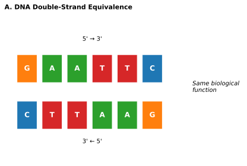
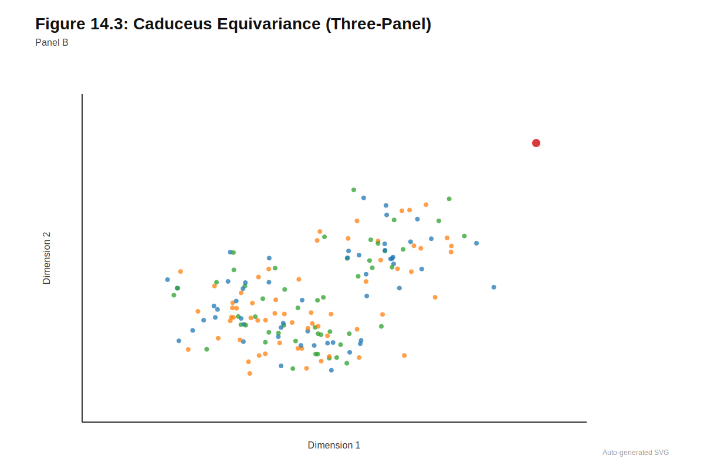
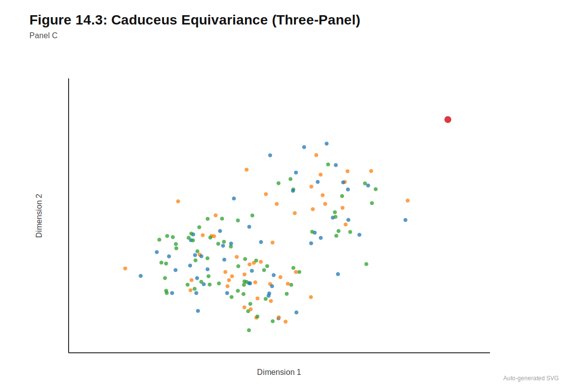
The training corpus draws from the OpenGenome2 dataset comprising 9.3 trillion DNA tokens across all domains of life, a 30-fold increase over the original Evo training data. This massive scale exposes the model to the full spectrum of genomic organization: compact prokaryotic gene arrangements, sprawling eukaryotic regulatory landscapes with extensive noncoding sequence, viral genomes with overlapping reading frames, and the diversity of regulatory architectures across evolution. The model comes in 7 billion and 40 billion parameter variants, with the larger model extending well beyond the original Evo’s scale.
The architecture builds on StripedHyena 2, refining the hybrid design that proved effective in the original Evo. The combination of convolutional operations with selective attention mechanisms enables processing of sequences up to 1 million nucleotides, nearly an order of magnitude beyond Evo’s 131 kilobase context. Like its predecessor, Evo 2 uses an autoregressive training objective (predicting the next base given all previous bases), which differs from the masked language modeling used in DNABERT and related models. Autoregressive training may provide complementary strengths for sequence generation and likelihood-based scoring, since the model learns to generate plausible sequences in addition to discriminating between them (Chapter 8).
Evo 2 exhibits several forms of emergent biological knowledge despite training only on raw sequence, extending the capabilities first observed in Evo. The model learns to identify exon-intron boundaries without explicit annotation, identifies transcription factor binding site patterns matching known motifs, captures aspects of protein secondary and tertiary structure when processing coding sequences, and identifies prophage insertion regions in bacterial genomes. Where Evo demonstrated these capabilities primarily in prokaryotic contexts, Evo 2 generalizes them across eukaryotic genomes with their more complex gene structures.
For variant effect prediction, Evo 2 enables zero-shot scoring through likelihood ratios. Variants can be scored for consistency with learned genomic patterns by comparing model probabilities for reference versus alternate sequences. On benchmarks of pathogenic versus benign variants, zero-shot scores achieve competitive performance with specialized supervised methods, though calibration remains necessary before clinical application (?sec-ch14-dna-lm-vep). The calibration methods required for clinical deployment are examined in Section 23.2, and integration into diagnostic workflows in ?sec-ch26-fm-scoring. The model also supports classification of variants of uncertain significance through simple classifiers trained on its embeddings.
The pan-species training enables cross-species applications that extend Evo’s prokaryotic focus to the full breadth of biology. Variant interpretation extends naturally to non-model organisms, supporting conservation genomics and agricultural breeding where labeled training data is scarce. Model representations cluster sequences by phylogenetic relationships even without explicit evolutionary modeling. Beyond discriminative tasks, Evo 2 demonstrates generative capabilities building on Evo’s initial demonstrations: synthesizing plausible mitochondrial genomes, prokaryotic operons, and eukaryotic regulatory regions with coherence across kilobase to megabase scales.
The following table summarizes the key characteristics of the major DNA language models discussed in this chapter:
| Model | Year | Context | Parameters | Architecture | Training Objective | Key Innovation |
|---|---|---|---|---|---|---|
| DNABERT | 2021 | ~500 bp | 110M | Transformer | Masked LM | Proof of concept |
| DNABERT-2 | 2024 | ~500 bp | 117M | Transformer | Masked LM | BPE tokenization |
| Nucleotide Transformer | 2023 | 6 kb | 500M-2.5B | Transformer | Masked LM | Multi-species, scaling |
| GPN | 2023 | 512 bp | 25M | Transformer | Masked LM | Cross-species VEP |
| HyenaDNA | 2023 | 1 Mb | 1.6M-6.6M | Hyena | Next token | Sub-quadratic attention |
| Caduceus | 2024 | 131 kb | 1.6M-6.6M | Mamba | Next token | RC-equivariance |
| Evo | 2024 | 131 kb | 7B | StripedHyena | Next token | Prokaryotic scale |
| Evo 2 | 2025 | 1 Mb | 7B-40B | StripedHyena 2 | Next token | Pan-genomic, largest scale |
14.6 Training Data and What Models Learn
DNA language models are trained on diverse corpora ranging from single reference genomes to pan-genomic collections spanning the tree of life. Understanding what training data is used and what models learn from it is essential for anticipating model capabilities and limitations.
14.6.1 Training Corpus Composition
Early models like DNABERT trained primarily on the human reference genome (GRCh38), providing exposure to approximately 3 billion nucleotides from a single individual. The Nucleotide Transformer expanded to include multiple species and human population variation from resources like the 1000 Genomes Project (Chapter 2). Evo 2 scaled to 9.3 trillion tokens spanning all domains of life, including complete bacterial chromosomes, eukaryotic genomes, viral sequences, and metagenomic assemblies.
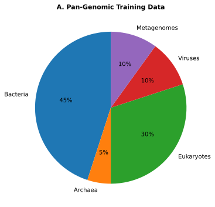
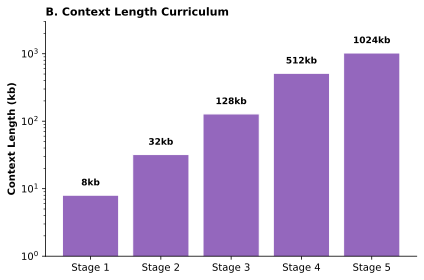
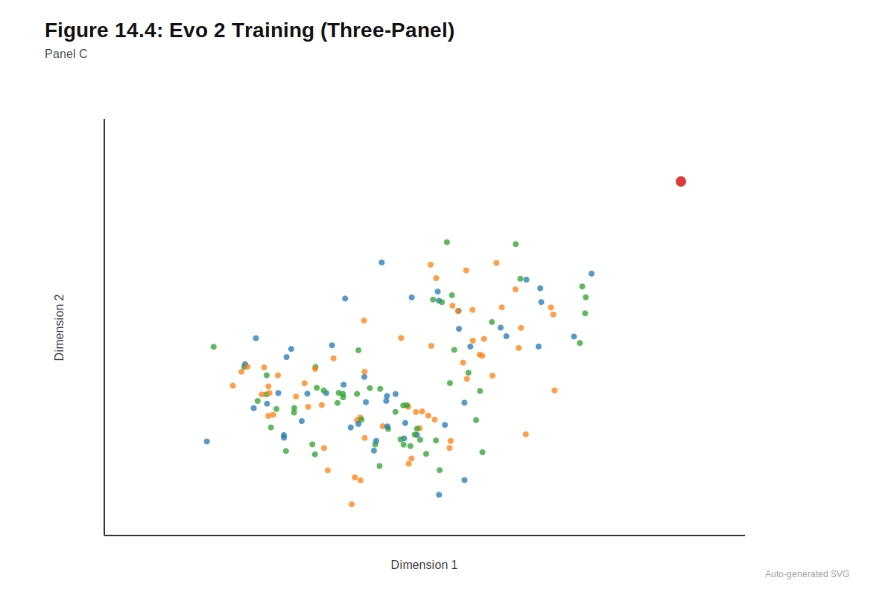
The composition of training data shapes what models learn. Reference-only training captures the genome’s architecture but not population variation. Multi-individual training exposes models to common polymorphisms but may underrepresent rare variants. Cross-species training provides evolutionary context (constrained regions are conserved, variable regions diverge) but may not capture species-specific regulatory patterns. Training on functional genomics data (GROVER-style approaches) teaches regulatory activity patterns but ties models to specific assays and cell types.
A tension exists between generality and specificity. Models trained on broader corpora learn more general representations that transfer across species and contexts, but may underperform narrower models on specific applications. Models trained on focused datasets may capture task-relevant patterns more effectively but transfer less well. The optimal training strategy depends on intended applications.
14.6.2 Probing What Models Learn
If a model was trained only to predict masked nucleotides (never seeing any labels), how could we determine whether it learned to recognize splice sites, transcription factor binding sites, or gene boundaries? What experiments would reveal this?
Linear probing experiments reveal what information is encoded in model representations without task-specific fine-tuning. By training simple classifiers (logistic regression, single-layer perceptrons) on frozen embeddings to predict known annotations, researchers can assess whether models have learned biologically meaningful patterns. The methodology for such probing experiments is detailed in Section 9.3.3, with implications for interpretability examined in Section 24.4.
DNA language models consistently learn to recognize several categories of genomic features. Models learn patterns corresponding to known transcription factor binding sites, splice signals, and other sequence motifs without explicit supervision; probing for specific motif presence shows that model embeddings can distinguish sequences containing binding sites from those lacking them. Representations also encode gene structure: models distinguish coding from noncoding regions, identify exon-intron boundaries, and recognize splice donor and acceptor sites. This knowledge emerges from sequence statistics alone, suggesting that the compositional and structural differences between genomic region types are learnable from DNA sequence.
Evolutionary constraints are implicitly captured, particularly in models trained on multi-species data. Positions under purifying selection (constrained across evolution) show different embedding patterns than neutral positions. This provides a self-supervised analog to traditional conservation scoring, though the relationship between model-learned and alignment-based conservation measures varies across genomic contexts.
More complex patterns like regulatory grammar (the syntax governing how transcription factors combine to specify expression) show mixed evidence. Models capture some aspects of regulatory logic, such as the spacing preferences between binding sites, but may not fully represent the combinatorial complexity of enhancer function. Similarly, long-range dependencies (enhancer-promoter interactions across tens of kilobases) are accessible to long-context models but require extensive probing to assess whether they are actually leveraged.
14.6.3 What Models Do Not Learn
Equally important is recognizing what current DNA language models struggle to represent. Sequence-only models cannot capture epigenetic context: DNA methylation, histone modifications, and chromatin accessibility all affect gene regulation but are not encoded in primary sequence. Some models (like GROVER) address this by incorporating functional genomics data, but this ties them to specific cell types and experimental conditions.
The three-dimensional structure of chromatin affects which regulatory elements can physically interact, but linear sequence models cannot represent folding (Chapter 20). Cell-type specificity of gene regulation depends on transcription factor expression levels and chromatin state, not just sequence; models trained on sequence alone can predict potential regulatory activity but not its realization in specific contexts.
Complex variant patterns beyond single nucleotide changes remain challenging. Indels, structural variants, repeat expansions, and epistatic interactions between distant loci are either not representable (depending on tokenization) or poorly predicted. Most benchmark tasks focus on SNVs, leaving multi-nucleotide effects underexplored.
The following table summarizes what DNA language models can and cannot learn from sequence alone:
| Category | Can Learn | Cannot Learn |
|---|---|---|
| Sequence motifs | TF binding sites, splice signals, promoter elements | Cell-type-specific activity of motifs |
| Gene structure | Exon-intron boundaries, coding vs. noncoding | Alternative splicing patterns in specific tissues |
| Evolutionary constraint | Conservation patterns from cross-species training | Recent selection not captured in training data |
| Regulatory grammar | Spacing preferences between motifs | Full combinatorial logic of enhancers |
| Epigenetic state | — | DNA methylation, histone modifications, chromatin accessibility |
| 3D structure | — | Chromatin folding, enhancer-promoter contacts |
| Complex variants | SNVs (with limitations) | Indels, structural variants, repeat expansions |
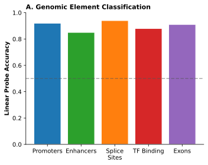
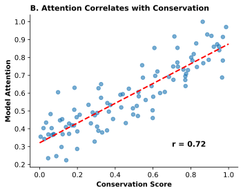
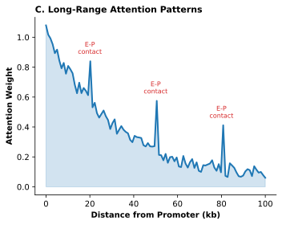
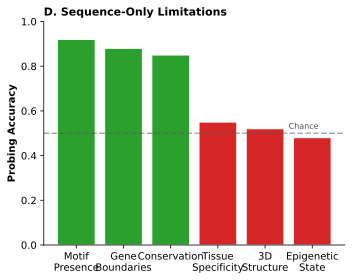
14.7 Benchmark Performance and Evaluation
Standardized benchmarks enable systematic comparison across DNA language models, though each benchmark captures only part of what we care about. Understanding benchmark construction and limitations is essential for interpreting performance claims.
14.7.1 Major Benchmark Suites
The BEND (Benchmark for Nucleotide Deep learning) suite provides a unified framework with tasks including gene finding, enhancer annotation, chromatin state prediction, and variant effect scoring (Marin et al. 2024). Standardized splits and metrics enable fair comparison. BEND specifically evaluates whether models capture biologically meaningful features at different resolution scales.
Genomic Benchmarks focus on regulatory element classification tasks: distinguishing promoters from nonpromoters, identifying active enhancers, predicting histone mark presence (gresova_genomic-benchmarks_2023?). These tasks test whether model representations encode basic genomic annotations. Most current DNA language models achieve high accuracy on these tasks, suggesting benchmark saturation for simpler classification problems.
The Long Range Benchmark (LRB) and DNALongBench evaluate long-context modeling capabilities (Cheng et al. 2024). Tasks include predicting distal enhancer-promoter interactions, modeling chromatin structure across hundreds of kilobases, and integrating information over extended genomic windows. These benchmarks specifically test whether long-context architectures provide meaningful advantages over shorter-context models.
Comparative evaluations across model families reveal that no single architecture dominates all tasks (Manzo, Borkowski, and Ovcharenko 2025). Performance varies substantially depending on task characteristics (local motif recognition versus long-range integration), training data composition, and architectural choices. HyenaDNA and Caduceus excel on long-range tasks where their architectural innovations matter; DNABERT-2 and Nucleotide Transformer perform well on shorter-range regulatory classification; Evo 2 shows advantages on cross-species tasks and variant effect prediction.
14.7.2 Benchmark Limitations
Several systematic issues affect benchmark interpretation. Many benchmarks have reached saturation, where multiple models achieve near-perfect performance and discriminative power disappears. This has happened for simpler classification tasks in Genomic Benchmarks. Data leakage arises when training and test sequences share homology, allowing models to succeed through memorization rather than generalization; the homology-aware splitting strategies required to prevent this are detailed in Section 12.2. Careful sequence clustering (using tools like MMseqs2 or CD-HIT) is required, but many older benchmarks lack rigorous split design. The comprehensive treatment of benchmark construction and evaluation methodology appears in Chapter 11 and Chapter 12.
Distribution shift between benchmark data and real-world applications means strong benchmark performance may not predict deployment success. Most benchmarks derive from well-studied regions of well-characterized genomes; performance on understudied regions, rare variants, or non-European populations may differ substantially. The systematic treatment of such confounding factors appears in Chapter 12, with specific attention to ancestry-related performance disparities in ?sec-ch22-ancestry-confounding.
The choice of evaluation metric affects what gets optimized. auROC favors discrimination regardless of calibration; Spearman correlation measures rank ordering but not absolute effect size prediction. Clinical applications may require well-calibrated probability estimates or accurate quantitative predictions, neither of which standard metrics directly assess (Chapter 23). The gap between benchmark performance and deployment utility remains substantial for most genomic applications.
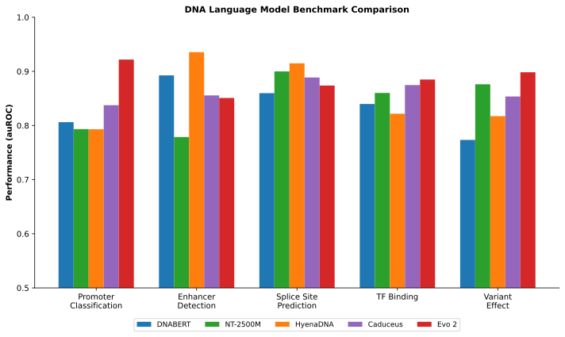
14.8 Annotation-Aware Extensions
Recent work explores enriching DNA language models with explicit biological structure beyond raw sequence. These approaches represent early steps toward multi-modal genomic foundation models.
Life-Code proposes central-dogma-informed tokenization, treating coding and noncoding regions differently (Liu et al. 2025). Coding regions use codon tokens (three-nucleotide units specifying amino acids), respecting the genetic code’s fundamental structure. Noncoding regions use learned subword units optimized during training. Knowledge distillation from protein language models imports protein-level structural knowledge into DNA representations. Life-Code achieves competitive results across DNA, RNA, and protein tasks, suggesting that encoding biological structure into tokenization provides useful inductive bias (Chapter 5).
BioToken extends tokenization to include explicit genomic annotations (Medvedev et al. 2025). Rather than representing regions purely as nucleotide strings, BioToken creates composite tokens encoding sequence content, variant presence, structural annotations (exon, intron, UTR), and functional context. The associated BioFM model achieves state-of-the-art performance across genomic benchmarks with substantially fewer parameters (265M), suggesting that annotation-aware representations improve parameter efficiency.
These approaches foreshadow the multi-modal foundation models discussed in Part IV (Chapter 22), where sequence is only one of many integrated information streams.
14.9 Using DNA Language Models in Practice
The right approach depends on your data and computational constraints:
- Little/no labeled data: Use zero-shot scoring or few-shot in-context learning
- Moderate labeled data (hundreds to thousands of examples): Extract embeddings, train lightweight downstream classifier
- Substantial labeled data (thousands+): Fine-tune with LoRA or full fine-tuning
- Computational constraints: Prefer embedding extraction (frozen model, one forward pass per sequence)
- Maximum performance: Full fine-tuning with sufficient data
DNA language models support multiple usage patterns for different applications.
14.9.1 Embeddings as Universal Features
The simplest approach extracts embeddings from a pretrained model and uses them as features for downstream classifiers. The workflow involves extracting embeddings for windows around loci of interest, pooling or selecting positions relevant to the task, and training lightweight downstream models (linear layers, shallow MLPs, gradient boosting) on the extracted features.
This approach supports diverse applications. Regulatory element classification distinguishes promoters, enhancers, silencers, and insulators based on learned representations. Chromatin state prediction uses sequence embeddings to predict ATAC-seq or histone mark presence. Variant effect scoring replaces or augments hand-crafted features in frameworks like CADD with language model features (analogous to CADD v1.7’s incorporation of protein language model features, as discussed in Chapter 4). The integration of these features into comprehensive variant effect prediction workflows is detailed in ?sec-ch14-combining-evidence. Splicing analysis combines embeddings with specialized architectures.
Because the language model remains frozen, this approach is computationally efficient and avoids catastrophic forgetting when new tasks are added. The pretrained model serves as a general-purpose feature extractor supporting many downstream applications.
14.9.2 Fine-Tuning and Adaptation
When sufficient labeled data exists, fine-tuning typically outperforms frozen embedding approaches (Chapter 9). Updating all language model parameters for a specific task allows representations to specialize, achieving highest performance but requiring more compute and risking catastrophic forgetting of general knowledge.
Parameter-efficient methods like LoRA (Low-Rank Adaptation) offer a middle path, inserting small trainable modules into each layer while keeping the backbone mostly frozen (Hu et al. 2021). These approaches achieve most of the performance gains of full fine-tuning while maintaining computational efficiency and preserving general capabilities. Adapter-based methods similarly add small bottleneck modules tuned for specific tasks.
14.9.3 Zero-Shot and Few-Shot Scoring
For variant interpretation, language models enable zero-shot scoring based on sequence likelihood. Compute the model’s probability for a sequence containing the reference allele, compare to probability for the sequence with the alternative allele, and interpret variants reducing probability as more disruptive. This approach requires no variant-specific training and can score any single-nucleotide variant the model can represent.
Zero-shot scoring quality depends on how well the model’s learned distribution captures biological constraints. Performance tends to improve with model scale and training data diversity (Chapter 13). Few-shot approaches include task examples in the input context, allowing in-context learning without parameter updates. HyenaDNA demonstrated this capability for genomic tasks, suggesting that sufficiently large models with long context can adapt through prompts rather than training.
14.10 Limitations and Open Challenges
Despite substantial progress, DNA language models face several fundamental limitations.
The tradeoff between context length and representational fidelity persists. Long-context models like HyenaDNA and Evo 2 can process megabase sequences but require efficient architectures that may not capture all the relationships dense attention would learn. Whether these architectural tradeoffs matter for specific applications remains task-dependent.
Most tokenization schemes represent insertions and deletions awkwardly or not at all. Structural variants spanning kilobases, repeat expansions, and complex rearrangements fall outside what current models can process (Chapter 5). Epistatic interactions between variants at distant loci are not captured even by long-context models trained solely on single sequences.
Training data composition shapes model capabilities in underexplored ways. Models trained primarily on European-ancestry genomes may perform poorly on variants common in other populations (Chapter 12). Ascertainment bias in training databases (enrichment for coding regions, well-studied genes, specific diseases) propagates to learned representations. The field lacks systematic evaluation of performance disparities across populations.
Interpretability remains limited (Chapter 24). While probing studies reveal what models encode, explaining why a specific variant receives a particular score in terms connecting to biological mechanism is difficult. Attention patterns and gradient-based attribution provide some insight but often fail to identify the specific sequence features driving predictions.
Integration with other modalities is nascent. DNA sequence provides necessary but insufficient information for predicting gene regulation. Epigenomic state, three-dimensional chromatin structure, transcription factor concentrations, and cellular context all matter. Current DNA language models cannot represent these factors; multi-modal approaches (discussed in Part IV) aim to address this limitation.
14.11 Representations Without Predictions
DNA language models capture sequence patterns, regulatory motifs, and evolutionary constraints through self-supervised pretraining on genomic sequence. The progression from early proof-of-concept models through architectural innovations enabling megabase context demonstrates that the paradigm works: models trained to predict masked nucleotides learn representations that transfer across diverse downstream tasks. Biological inductive biases (strand symmetry, codon structure, cross-species training) can substitute for raw scale on appropriate tasks, creating opportunities for efficient models that encode domain knowledge.
Yet DNA language models have inherent limitations. They produce representations, not predictions. A language model can embed a sequence in a space where similar regulatory elements cluster together, but it cannot directly output the expression level that sequence will produce or the chromatin accessibility it will exhibit. The models capture what patterns exist in genomic sequence but not what those patterns do in cellular context. They cannot represent epigenomic state, three-dimensional chromatin organization, or cell-type-specific regulation without additional inputs beyond sequence.
These limitations define the complementary relationship between language models and sequence-to-function models. Where DNA language models learn representations from sequence statistics, regulatory models like Enformer and Borzoi predict molecular phenotypes from sequence context (Chapter 16). The regulatory models provide quantitative outputs (expression levels, chromatin tracks, splice probabilities) that language models alone cannot produce. For variant effect prediction (Chapter 17), both representation quality and phenotypic prediction matter: language model embeddings capture evolutionary constraint while regulatory models predict functional consequences. Understanding what each model family provides is prerequisite to combining them effectively.
What we covered:
The paradigm shift from task-specific CNNs to general-purpose DNA language models that learn reusable representations from self-supervised pretraining
Model evolution from DNABERT (512 tokens, proof of concept) through Evo 2 (1 Mb context, 40B parameters, pan-genomic)
Architectural innovations that enable long contexts: implicit convolutions (HyenaDNA), state-space models (Caduceus), and hybrid designs (Evo 2)
Biological inductive biases like reverse-complement equivariance that can substitute for raw scale
What models learn (motifs, gene structure, evolutionary constraint) and what they cannot learn (epigenetic state, 3D structure, cell-type specificity)
Practical usage patterns: embeddings as features, fine-tuning, and zero-shot variant scoring
Key takeaways:
- DNA language models produce representations, not predictions. They capture sequence patterns but not cellular context.
- No single model dominates all tasks; model choice depends on context length requirements and available training data.
- Benchmark performance may not predict real-world deployment success due to distribution shift and metric limitations.
Looking ahead:
- Protein language models (Chapter 15) apply similar principles to amino acid sequences
- Regulatory models (Chapter 16) predict molecular phenotypes that DNA-LMs cannot
- Variant effect prediction (Chapter 17) combines both representation and prediction